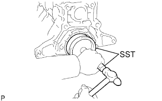
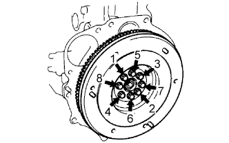
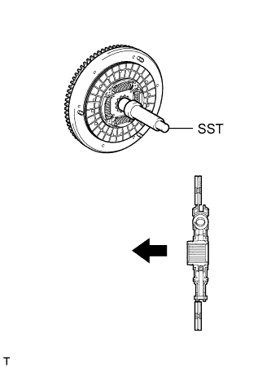
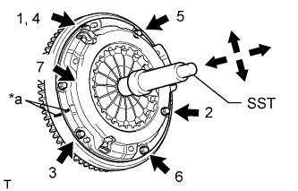

ЗАДНИЙ САЛЬНИК КОЛЕНЧАТОГО ВАЛА > УСТАНОВКА |
| 1. INSTALL REAR CRANKSHAFT OIL SEAL |
|  |
Apply MP grease to the lip of a new oil seal.
Using SST, tap in the oil seal until its surface is flush with the engine rear oil seal retainer edge.
| 2. INSTALL FLYWHEEL HOUSING DUST SEAL |
| 3. INSTALL REAR END PLATE |
Install the rear end plate with the 2 bolts.
| 4. INSTALL FLYWHEEL SUB-ASSEMBLY |
 |
Using SST, hold the crankshaft.
Clean the bolts and bolt holes.
Apply adhesive to 2 or 3 threads of each of the bolts.
Install the flywheel to the crankshaft.
Temporarily install the flywheel with the 8 bolts.
|  |
Tighten the 8 bolts uniformly in several steps in the order shown in the illustration.
| 5. INSTALL CLUTCH DISC ASSEMBLY |
|  |
Insert SST into the clutch disc. Then insert SST (together with the clutch disc) into the flywheel to install the clutch disc.
 | Flywheel Side |
| 6. INSTALL CLUTCH COVER ASSEMBLY |
|  |
Align the matchmarks on the clutch cover and flywheel.
| *a | Matchmark |
Tighten the 6 bolts uniformly in the order shown in the illustration, starting with the bolt located near the knock pin on the top.
| 7. INSTALL MANUAL TRANSMISSION ASSEMBLY |
Install the manual transmission (See page Нажмите здесь).